Chapter 5: Application, DevSecOps & Cloud Security¶
Most software today is assembled from your own code, thousands of open-source parts, and cloud services rented from someone else. The tools in this group help teams build websites, phone apps and services safely (catching mistakes before release) and keep them safe once they run in the cloud. 'DevSecOps' simply means building security checks into the everyday work of writing, testing and shipping software, instead of bolting them on at the end.
5.1 Static Code Analysis — SAST¶
Static Application Security Testing (SAST) tools read your source code without running it and point out lines that could be dangerous, such as code that lets a hacker sneak commands into a database. They work like an automatic, tireless code reviewer that knows thousands of common security mistakes.

Think of it like…
It is like a spell-checker for security: it underlines risky sentences in your document before anyone else reads it.
Real-world example
Mira, a developer at the fictional online bakery CrumbCart, opens a pull request that builds a database query by gluing user input into a text string. Within two minutes, the SAST check on the pull request flags it as possible SQL injection and shows the exact line. Mira switches to a parameterised query, the check turns green, and the flaw never reaches customers.
How it works¶
- Connect the scanner to your code repository or build pipeline.
- The tool parses the code and traces how untrusted data flows through it.
- Matches against rules for known weakness patterns (injection, weak crypto, hard-coded secrets).
- Findings appear in the pull request or IDE with the line number and a suggested fix.
- Teams tune rules and set a 'quality gate' that blocks merges with serious issues.
Who uses it
Software developers, application security engineers and QA teams in every industry that writes its own software, especially finance, healthcare and government.
Key takeaway
Run SAST on every pull request so developers fix issues while the code is fresh, and tune out noisy rules so people keep trusting the results.
Going deeper
- Most engines turn code into a syntax tree and data-flow graph, then run taint analysis: following untrusted input from a source to a dangerous sink without a sanitiser in between.
- Findings carry CWE identifiers, such as CWE-89 for SQL injection and CWE-79 for cross-site scripting, and map to the OWASP Top 10 and CWE Top 25 so reports line up with audits.
- Results are exchanged in SARIF (Static Analysis Results Interchange Format, an OASIS standard), which GitHub, GitLab and Azure DevOps can display as code-scanning alerts.
- Pattern-based tools (Semgrep, Bandit) are fast and easy to customise; deep inter-procedural engines (CodeQL, Coverity, Fortify, Checkmarx) find complex multi-file flows but run slower and need tuning.
- Teams keep trust by gating only new findings on changed code, keeping a baseline of accepted old issues, and marking triaged results such as 'false positive' or 'not exploitable'.
- NIST's Secure Software Development Framework (SSDF, SP 800-218) and PCI DSS 4.0 expect code to be reviewed or analysed for vulnerabilities, so SAST reports are common audit evidence.
- AI-assisted autofix, such as GitHub Copilot Autofix and similar features from Snyk and Semgrep, proposes patches for findings; suggestions still need human review and passing tests.
Common mistakes & misconceptions
- Assuming SAST finds everything: it misses runtime configuration, authorisation logic and business-logic flaws, so combine it with SCA, DAST and human code review.
- Turning on every rule and blocking builds on day one; start with high-confidence rules on new code, then widen coverage as noise falls.
- Scanning only the main branch once a week; scan each pull request so developers fix issues while the code is still fresh.
Try it: Scan the current project with Semgrep's community rules¶
semgrep scan --config auto .
Popular tools & products¶
| Name | What it does | Example |
|---|---|---|
| SonarQube (Server, Cloud, for IDE) Sonar (SonarSource) · Freemium |
Popular code-quality and security scanner for dozens of languages; sold as SonarQube Server and SonarQube Cloud (formerly SonarCloud), with a free Community Build. | A logistics company runs SonarQube on every build and blocks releases when new code introduces critical security hotspots. |
| Checkmarx One (SAST) Checkmarx · Commercial |
Enterprise SAST that scans source code without needing it to compile, part of a wider application security platform. | A bank's security team scans 400 repositories nightly and routes high-severity findings into each team's Jira backlog. |
| Veracode Static Analysis Veracode · Commercial |
Cloud-based SAST that scans compiled or packaged applications and offers policy reporting for compliance. | An insurer uploads each release build to Veracode and attaches the passing policy report to its audit evidence. |
| OpenText Fortify OpenText · Commercial |
Long-established enterprise SAST suite (formerly Micro Focus/HP Fortify), available on-premises or as a service. | A defence contractor runs Fortify Static Code Analyzer inside its isolated network to satisfy strict government coding standards. |
| Semgrep Semgrep, Inc. · Freemium |
Fast, lightweight scanner with easy-to-write rules that look like the code they match; open-source engine plus paid platform. | A startup writes a custom Semgrep rule banning an unsafe internal function, then enforces it across all repositories in CI. |
| GitHub CodeQL / Code Security GitHub (Microsoft) · Freemium |
Treats code as a queryable database to find vulnerabilities; free for public repos, sold as GitHub Code Security (formerly Advanced Security) for private repos. | An open-source library enables CodeQL default setup and gets alerts, plus Copilot Autofix suggestions, directly on pull requests. |
| Snyk Code Snyk · Freemium |
Developer-friendly SAST that scans in the IDE and pull requests, using machine learning-assisted analysis and fix suggestions. | A JavaScript developer sees a cross-site scripting warning in VS Code and applies the suggested fix before committing. |
| Coverity Black Duck Software · Commercial |
Deep static analyser known for finding security and reliability defects in C, C++, Java and other large codebases. | A car-parts maker scans embedded C firmware with Coverity to catch memory errors and meet automotive coding guidelines. |
| Bandit PyCQA community · Open source |
Simple command-line scanner that finds common security issues in Python code, such as unsafe use of eval or weak hashing. | A data team adds 'bandit -r src/' to its pre-commit checks and catches a hard-coded password in a script. |
| Find Security Bugs OWASP project (SpotBugs plugin) · Open source |
Plugin for the SpotBugs Java analyser that detects more than 100 security bug patterns in Java, Kotlin and Scala code. | A Java team adds Find Security Bugs to its Maven build and catches a predictable random-number generator used for password-reset tokens. |
| Klocwork Perforce · Commercial |
Static analyser focused on C, C++, C# and Java, popular for safety-critical and embedded software. | A medical-device maker runs Klocwork on every commit to enforce secure coding standards for its infusion pump software. |
| GitLab SAST GitLab · Freemium |
Static scanning built into GitLab pipelines; the Ultimate tier adds merge-request results, dashboards and GitLab's own advanced SAST engine. | A logistics firm enables the GitLab SAST template so every merge request shows new security findings before review. |
5.2 Software Composition Analysis — Open-Source Dependencies¶
Modern apps are mostly made of free open-source building blocks called dependencies. Software Composition Analysis (SCA) tools list every block your app uses, warn you when one has a known security hole, and check that the licences allow your use.
Think of it like…
It is like a food-recall service for your pantry: it checks every ingredient you bought against the latest recall list and tells you what to throw out.
Real-world example
The fictional travel site TripLoop uses 1,200 open-source packages. When a serious flaw is announced in a popular logging library, their SCA tool shows within an hour that three services use the affected version. A bot automatically opens pull requests upgrading to the fixed version, and the teams merge them the same afternoon.
How it works¶
- The tool reads manifest and lock files (package.json, pom.xml, requirements.txt) to list direct and indirect dependencies.
- It compares each package version against vulnerability databases such as CVE and OSV.
- It checks licences against company policy (for example, flagging copyleft licences).
- It raises alerts or opens automatic upgrade pull requests.
- Advanced tools show 'reachability' — whether your code actually calls the vulnerable part.
Who uses it
Developers, DevOps engineers, open-source program offices and legal/compliance teams at any organisation that ships software.
Key takeaway
Keep dependencies updated little and often with automated pull requests; one big upgrade a year is far more painful and risky.
Going deeper
- Lock files (package-lock.json, poetry.lock, go.sum, Cargo.lock) record exact versions of every direct and transitive dependency, so SCA results are far more accurate from lock files than from loose manifest ranges.
- Vulnerability data comes from the NVD (CVE records), the GitHub Advisory Database (GHSA IDs) and OSV.dev, which aggregates ecosystem advisories in one open, machine-readable schema.
- Prioritisation combines CVSS severity with EPSS (the estimated probability of exploitation in the next 30 days), CISA's Known Exploited Vulnerabilities (KEV) catalogue and reachability of the vulnerable function.
- Licence policy separates permissive licences (MIT, Apache-2.0, BSD) from copyleft ones (GPL, AGPL) whose obligations can require sharing source code; SPDX licence identifiers make this machine-checkable.
- Malicious packages (typosquats, hijacked maintainer accounts, install-script malware) are a different threat from vulnerable ones; behaviour analysis and repository firewalls catch them before any CVE exists.
- VEX (Vulnerability Exploitability eXchange) statements let a supplier declare a product 'not affected' by a CVE, cutting noise for customers who monitor SBOMs.
Common mistakes & misconceptions
- Fixing only direct dependencies: a vulnerable transitive package needs a parent upgrade, override or resolution, so always inspect the full tree.
- Treating every 'critical' CVSS score as an emergency; check KEV, EPSS and reachability before interrupting a team's sprint.
- Auto-merging every update-bot pull request without tests or review, letting a broken or compromised release flow straight to production.
Try it: Check a Node.js project for known-vulnerable packages¶
npm audit --audit-level=high
Popular tools & products¶
| Name | What it does | Example |
|---|---|---|
| Snyk Open Source Snyk · Freemium |
Finds vulnerable and badly licensed open-source packages and opens fix pull requests with the smallest safe upgrade. | A fintech links its GitHub organisation to Snyk and receives automatic upgrade pull requests whenever a new flaw affects a dependency. |
| Black Duck SCA Black Duck Software · Commercial |
Enterprise SCA with a large open-source knowledge base, strong licence compliance and code-snippet matching. | Before acquiring a startup, a software company uses Black Duck to audit its code for hidden licence obligations. |
| Mend SCA Mend.io (formerly WhiteSource) · Commercial |
Scans dependencies for vulnerabilities and licence risks, with reachability analysis and automated remediation. | A retailer uses Mend to prioritise only the vulnerable libraries its code actually calls, cutting alert volume sharply. |
| Dependabot GitHub (Microsoft) · Free |
Built-in GitHub feature that alerts on vulnerable dependencies and opens pull requests to update them. | A university project enables Dependabot and receives a weekly pull request bumping outdated Python packages. |
| Renovate Mend.io · Open source |
Highly configurable bot that keeps dependencies up to date across many platforms and package ecosystems. | A platform team configures Renovate to group minor updates weekly and auto-merge them when tests pass. |
| OWASP Dependency-Check OWASP · Open source |
Free command-line and build-plugin tool that identifies dependencies with publicly known vulnerabilities, strongest for Java and .NET. | A government agency adds the Dependency-Check Maven plugin so builds fail on any library with a critical CVE. |
| JFrog Xray JFrog · Commercial |
Scans packages and container images stored in JFrog Artifactory for vulnerabilities and licence issues, and can block downloads. | A games studio configures Xray to stop developers downloading any npm package with a critical known flaw. |
| Sonatype Lifecycle Sonatype · Commercial |
Policy-driven SCA (formerly Nexus IQ) from the maintainers of Maven Central, with repository firewall to block bad components. | A bank uses Sonatype Repository Firewall to quarantine malicious packages before they ever reach a developer laptop. |
| Socket Socket Inc. · Freemium |
Detects malicious or suspicious open-source packages by analysing package behaviour, such as unexpected network or install scripts. | Socket flags a newly added npm package that runs a hidden install script, and the reviewer rejects the pull request. |
| Endor Labs Endor Labs · Commercial |
SCA platform emphasising function-level reachability analysis, showing which vulnerable dependency code your application can actually call. | A payments company uses Endor Labs to cut 2,000 dependency alerts down to the few dozen reachable from its own code. |
| OSV-Scanner Google · Open source |
Free scanner that checks project lock files against the open OSV.dev vulnerability database covering many ecosystems. | A Go developer runs OSV-Scanner in CI to catch vulnerable modules across several language projects in one step. |
| pip-audit PyPA · Open source |
Audits Python environments and requirements files for packages with known vulnerabilities. | A data scientist runs pip-audit before sharing a notebook environment and upgrades a flagged web library. |
| FOSSA FOSSA · Commercial |
Open-source licence compliance and vulnerability management, generating attribution notices and SBOMs automatically. | A device maker uses FOSSA to produce the open-source licence notice shipped inside its smart TV menu. |
5.3 Dynamic Application Security Testing — DAST¶
Dynamic Application Security Testing (DAST) tools test your own running website or app from the outside, the way an attacker would, by clicking links, filling forms and sending tricky inputs to see what breaks. Many checks follow the OWASP Top 10 (latest edition: 2025), a free list of the most common web application risks, such as broken access control (seeing data you should not), security misconfiguration and injection (tricking the app into running your commands).

Think of it like…
It is like a home inspector who walks around your finished house rattling every door and window, rather than reading the blueprints.
Real-world example
Before launching its new patient portal, the fictional GreenLeaf Clinic points a DAST scanner at its test environment. The scanner discovers that changing a number in the web address shows another patient's appointment, a broken access control flaw. Developers add a proper ownership check, the rescan comes back clean, and the portal launches on schedule.
How it works¶
- Point the scanner at a test or staging copy of the app (only apps you own or are authorised to test).
- Give it login details for a test account so it can reach pages behind sign-in.
- The scanner crawls pages and APIs, then sends crafted inputs to probe for weaknesses.
- It confirms issues where possible and reports them with evidence and fix advice.
- Automate scans in the release pipeline and rescan after fixes.
Who uses it
Application security teams, penetration testers, QA engineers and compliance staff, especially where standards like PCI DSS require regular app testing.
Key takeaway
Only scan applications you own or have written permission to test, and prefer a staging copy so aggressive tests cannot damage live data.
Going deeper
- DAST is black-box: it needs no source code and works with any language, but it only tests what it can reach, so authenticated scanning and API definitions (OpenAPI, GraphQL schemas, Postman collections) are vital.
- Passive scanning only observes traffic, catching issues like missing security headers; active scanning sends test inputs and can create records or send emails, so it belongs on staging data.
- Single-page applications need browser-based crawling with a headless browser, because their links and forms are built by JavaScript that classic spiders never execute.
- Findings map to the OWASP Top 10:2025, led by A01 Broken Access Control and A02 Security Misconfiguration, and to CWE IDs for tracking and metrics.
- PCI DSS 4.0 requirement 6.4 expects public-facing web applications to be assessed for vulnerabilities regularly and after changes, or protected by an automated solution such as a WAF.
- Pipelines usually run a quick passive baseline on every deployment and a full authenticated active scan nightly or weekly, because full scans of large apps can take hours.
Common mistakes & misconceptions
- Running an aggressive active scan against production; tests can fill databases with junk or trigger emails, so use staging or an approved gentle profile.
- Unauthenticated scans that only reach the login page and report 'clean'; configure login and verify the scanner stays signed in.
- Expecting DAST to find business-logic flaws such as coupon abuse; scanners rarely understand intent, so pair them with manual testing.
Try it: Run a ZAP baseline (passive) scan against your own test site in Docker¶
docker run -t ghcr.io/zaproxy/zaproxy:stable zap-baseline.py -t https://staging.example.com
Popular tools & products¶
| Name | What it does | Example |
|---|---|---|
| ZAP (Zed Attack Proxy) ZAP project (formerly OWASP), sponsored by Checkmarx · Open source |
The world's most widely used free web app scanner, with automated scans, an intercepting proxy and CI-friendly Docker images. | A nonprofit runs the ZAP baseline scan in GitHub Actions on every deployment to its donation site's staging copy. |
| Burp Suite PortSwigger · Freemium |
Industry-standard toolkit for web security testing; free Community edition, Professional for testers, and Burp Suite DAST for automated scanning. | An in-house tester uses Burp Suite Professional to verify a reported login flaw before the developers fix it. |
| Invicti Invicti Security · Commercial |
Enterprise DAST (formerly Netsparker) known for 'proof-based scanning' that confirms many findings automatically to reduce false alarms. | A university scans 300 department websites with Invicti and receives confirmed, prioritised vulnerability lists for each. |
| Acunetix Invicti Security · Commercial |
Easy-to-use web vulnerability scanner aimed at small and mid-sized teams, sharing technology with Invicti. | A web agency scans every client site with Acunetix before handover and fixes outdated plugins it flags. |
| StackHawk StackHawk · Freemium |
Developer-focused DAST built on ZAP that runs in CI pipelines and tests REST, GraphQL and gRPC APIs. | A SaaS startup runs StackHawk on each pull request so API flaws are caught before merging. |
| Qualys Web Application Scanning Qualys · Cloud service |
Cloud-based DAST that discovers and scans web apps and APIs, integrated with Qualys's wider vulnerability platform. | A retailer schedules monthly Qualys WAS scans of its checkout pages to support PCI DSS compliance. |
| Rapid7 InsightAppSec Rapid7 · Cloud service |
Cloud DAST that crawls modern JavaScript-heavy apps and offers attack replay so developers can reproduce findings. | A developer clicks 'attack replay' in InsightAppSec to see exactly how a reported cross-site scripting issue works. |
| Tenable Web App Scanning Tenable · Cloud service |
DAST module in Tenable's exposure-management platform, scanning web apps alongside network vulnerability data. | A manufacturer views web app flaws and server vulnerabilities together in one Tenable dashboard. |
| HCL AppScan HCL Software · Commercial |
Enterprise testing suite (formerly IBM AppScan) best known for dynamic scanning, with static, interactive and open-source analysis modules; desktop, on-premises and cloud editions. | A government department runs AppScan on its intranet applications that cannot be reached by cloud scanners. |
| Nikto CIRT.net (Chris Sullo and community) · Open source |
Classic command-line web server scanner that checks for dangerous files, outdated software and misconfigurations. | A system administrator runs Nikto on a newly built internal web server and removes a forgotten test page it finds. |
5.4 Threat Modelling & Secure Design¶
It is far cheaper to design software securely than to bolt security on later. Threat modelling is a structured conversation, early in a project, that asks 'what could go wrong and what will we do about it?'. Secure design and secure-coding guides then turn those answers into concrete rules developers follow.
Think of it like…
Architects think about fire exits, flood risk and break-ins before a building is built, not after people move in. Threat modelling is the same planning session for software, and the OWASP Top 10 is the building code of common mistakes to avoid.
Real-world example
Before building a new payments feature, Brightwave Fintech runs a one-hour threat-modelling session. They sketch how data flows, then use STRIDE to list threats: someone spoofing a user, tampering with an amount, or reading another customer's statement. For each, they agree a control. Two flaws are designed out before a single line of code is written.
How it works¶
- Draw how the system works: its parts, data stores, and where data crosses a trust boundary.
- Ask what could go wrong, using a prompt such as STRIDE or an attack tree to avoid missing categories.
- Rate each threat by likelihood and impact and decide to mitigate, accept, transfer or avoid it.
- Write the agreed controls into requirements and secure-coding standards for the team.
- Revisit the model when the design changes; keep it a living document, not a one-off.
Who uses it
Architects, developers, product owners and application-security engineers, ideally together, in any team building software or services.
Key takeaway
Do a lightweight threat model early for every significant feature; a rough model done on time beats a perfect one done too late.
Going deeper
- The Threat Modeling Manifesto (2020) frames the work as four questions: what are we building, what can go wrong, what are we going to do about it, and did we do a good enough job.
- A trust boundary is any point where data moves between parts that trust each other differently, such as browser to server; most serious threats cluster at these boundaries.
- STRIDE maps neatly to desirable properties: each threat is the opposite of authentication, integrity, non-repudiation, confidentiality, availability and authorisation.
- Insecure Design entered the OWASP Top 10 in 2021 to stress that some flaws are design decisions no amount of clean coding can fix; the 2025 edition added Software Supply Chain Failures.
- Older risk-rating schemes like DREAD are now less used because scores were subjective; many teams instead rate likelihood and impact or reuse CVSS-style thinking.
- Threat modelling works beyond software too: it is applied to networks, cloud architectures, hardware and even business processes.
Common mistakes & misconceptions
- Leaving threat modelling until the design is finished; by then the cheap fixes are gone and findings get deferred.
- Chasing a perfect, exhaustive model; a short model that ships on time and is revisited beats an unfinished masterpiece.
- Treating the OWASP Top 10 as a complete test plan; it is an awareness list, while ASVS is the detailed, testable requirements set.
- Doing the model once and never updating it; an architecture change can invalidate every earlier assumption.
Popular tools & products¶
| Name | What it does | Example |
|---|---|---|
| STRIDE Microsoft · Framework |
A prompt listing six threat types: Spoofing, Tampering, Repudiation, Information disclosure, Denial of service and Elevation of privilege. | A team walks each data flow through the six STRIDE letters so no common threat category is forgotten. |
| Attack trees Bruce Schneier (popularised) · Technique |
A diagram with the attacker's goal at the top and the possible ways to reach it branching below, helping teams see the easiest paths. | An attack tree for 'steal funds' shows a phishing branch is far easier than breaking encryption, so defences focus there. |
| PASTA VerSprite (Tony UcedaVélez) · Framework |
Process for Attack Simulation and Threat Analysis: a seven-stage, risk-centric method linking business impact to technical threats. | A bank uses PASTA so each technical threat is tied to a monetary business impact executives can weigh. |
| OWASP Threat Dragon OWASP · Open source |
Free threat-modelling tool for drawing data-flow diagrams and recording threats and mitigations against them. | A start-up documents its first threat model in Threat Dragon and stores it next to the code in Git. |
| Microsoft Threat Modeling Tool Microsoft · Free |
Desktop tool that generates STRIDE threats automatically from a data-flow diagram you draw. | A developer diagrams a web app and the tool lists spoofing and tampering threats at each trust boundary. |
| OWASP pytm OWASP · Open source |
'Threat model as code': describe your system in Python and generate diagrams and a threat list automatically. | A platform team keeps pytm models in the repo so the threat model updates with every architecture change. |
| OWASP Top 10 OWASP · Framework |
The best-known awareness list of the most critical web application security risks; the 2025 edition is the latest. | A team adds a checklist item for each 2025 Top 10 category, such as broken access control, to its design reviews. |
| OWASP ASVS OWASP · Framework |
Application Security Verification Standard: a detailed, testable list of security requirements at three assurance levels; version 5.0 (2025). | A SaaS vendor adopts ASVS Level 2 as the security requirements every new service must meet before launch. |
| OWASP Cheat Sheet Series OWASP · Free |
Concise, practical secure-coding guides for specific topics such as input validation, authentication and session management. | A developer follows the password-storage cheat sheet to pick Argon2id with safe parameters. |
| CWE Top 25 MITRE · Framework |
Annual list of the most dangerous software weakness types, such as cross-site scripting and SQL injection, with CWE identifiers. | A security lead maps scanner findings to CWE Top 25 ranks to explain to management which weaknesses matter most. |
| SAFECode / secure SDLC practices SAFECode · Framework |
Industry guidance on building security into each phase of the software development lifecycle, from design to release. | A product group adopts secure-SDLC gates so no release ships without design review and security testing. |
| NIST Secure Software Development Framework (SSDF) NIST (SP 800-218) · Framework |
A set of secure development practices that US federal software suppliers are expected to follow and attest to. | A vendor selling to government maps its development process to the SSDF to complete a required self-attestation. |
5.5 Runtime Protection — IAST & RASP¶
These tools place a small sensor (an 'agent') inside the running application. Interactive Application Security Testing (IAST) watches the app from the inside during testing to spot flaws precisely, while Runtime Application Self-Protection (RASP) and its newer cousin, Application Detection and Response (ADR), watch in production and block attacks as they happen.
IAST versus RASP / ADR
| IAST | RASP / ADR | |
|---|---|---|
| Where | Test and QA environments | Production |
| Goal | Find vulnerabilities precisely | Detect and block attacks |
| Triggered by | Normal functional tests | Live malicious requests |
| Output | File, line and triggering request | Blocked request and alert |
| Blind spot | Code no test exercises | Logic flaws that look legitimate |
| Main users | AppSec, QA, developers | SecOps, SRE teams |
The same in-app agent technology serves two jobs: finding flaws in testing and stopping attacks in production.
Think of it like…
IAST is a doctor's heart monitor worn during a fitness test; RASP is a pacemaker that steps in automatically when something goes wrong.
Real-world example
The fictional ticket seller SeatSnap adds an IAST agent to its test servers. While QA staff run their normal tests, the agent notices user input flowing unchecked into a database query and reports the exact line of code. In production, the RASP mode later blocks a real injection attempt on an old page that had not yet been fixed.
How it works¶
- Install the language agent (Java, .NET, Node.js, Python and so on) alongside the application.
- In testing, the agent observes real data flows while normal functional tests run (IAST).
- It reports vulnerabilities with the precise code location and the request that triggered them.
- In production, the agent detects and can block exploit attempts inside the app (RASP/ADR).
- Alerts flow to the security team's monitoring tools for follow-up.
Who uses it
Application security teams, site reliability engineers and DevOps teams at companies running business-critical web apps and APIs.
Key takeaway
Use IAST to get low-noise findings from tests you already run, and treat RASP as an extra safety net rather than a replacement for fixing code.
Going deeper
- Agents use runtime instrumentation, for example the Java agent interface (-javaagent) or the .NET profiling API, to hook risky operations such as SQL execution, file access and deserialisation.
- Because IAST sees both the incoming request and the exact code path, it confirms real data flows and usually reports far fewer false positives than SAST, but only for code exercised by tests.
- RASP decides with full context, for example whether user input actually changed the structure of a SQL query, rather than guessing from request patterns as a WAF does, which reduces false blocks.
- Application Detection and Response (ADR) streams application-layer events to the SOC, filling the visibility gap between endpoint detection (EDR) and network monitoring.
- Agents add some latency and memory overhead and support specific language runtimes and versions, so check coverage for every stack and run performance tests before rollout.
Common mistakes & misconceptions
- Using RASP as an excuse to leave known flaws unfixed; it is a safety net that can be bypassed, misconfigured or removed during upgrades.
- Running IAST with a thin test suite and concluding the app is safe; routes no test calls are invisible to the agent.
- Switching RASP straight to blocking mode in production; start in monitor mode to confirm legitimate traffic is not disrupted.
Popular tools & products¶
| Name | What it does | Example |
|---|---|---|
| Contrast Security (Assess, Protect, ADR) Contrast Security · Commercial |
Pioneer of agent-based IAST (Assess) and runtime protection (Protect), now packaged as Application Detection and Response. | An airline's Java booking service runs Contrast Protect, which blocks a deserialisation attack while engineers patch the library. |
| Datadog App and API Protection Datadog · Cloud service |
Runtime threat detection and blocking built into Datadog's tracing libraries, linking attacks to traces and services. | An online marketplace sees a credential-stuffing attack in Datadog and blocks the attacking IP addresses with one click. |
| Imperva RASP Imperva (a Thales company) · Commercial |
Runtime protection agent that neutralises attacks such as injection from inside the application without code changes. | A bank shields a legacy Java app it cannot easily change by deploying Imperva RASP in front of known weaknesses. |
| Dynatrace Application Security Dynatrace · Commercial |
Uses Dynatrace's monitoring agent to find vulnerable libraries actually running and to block injection attacks at runtime. | An operations team learns which of 200 services really load a vulnerable library, so patching starts with those. |
| Black Duck Seeker IAST Black Duck Software · Commercial |
IAST agent that verifies vulnerabilities during testing and tracks sensitive data such as card numbers through the app. | A payments firm uses Seeker during QA to confirm card data is never written to logs in plain text. |
| New Relic IAST New Relic · Cloud service |
Interactive testing feature in New Relic's observability agents that confirms exploitable vulnerabilities in pre-production. | A DevOps team switches on IAST in its staging New Relic agents and gets validated findings with no extra scanner. |
| Invicti Shark (IAST) Invicti Security · Commercial |
Optional IAST sensor that works alongside Invicti's DAST scans to confirm findings and pinpoint code locations. | A web team installs the Shark sensor so DAST findings arrive with the exact file and line to fix. |
| Oligo Oligo Security · Commercial |
Runtime application security that watches how libraries behave in production to detect and stop exploitation. | Oligo alerts when an open-source image library suddenly starts a system shell, a sign of active exploitation. |
5.6 Mobile App Security Testing & Protection¶
Companies that publish their own phone apps must make sure the app does not leak data, store passwords carelessly or trust a tampered phone. Mobile Application Security Testing (MAST) tools check the finished app file for such weaknesses, and 'app shielding' tools make the released app harder to copy, modify or abuse.

Think of it like…
It is like crash-testing a new car model and then fitting an immobiliser: first prove it is safe, then make it hard to tamper with or steal.
Real-world example
The fictional bank FernBank is about to release version 5 of its Android and iPhone app. The automated mobile scan in its build pipeline finds that the app saves the customer's login session in an unprotected file. Developers move it into the phone's secure keystore and rescan. At launch, FernBank's server also uses Google and Apple attestation checks to confirm requests come from a genuine, unmodified copy of the app.
How it works¶
- Use the OWASP MASVS checklist as the app's security requirements (storage, crypto, network, code, privacy).
- Scan every Android (APK/AAB) and iPhone (IPA) build automatically in the pipeline.
- Test on real or emulated devices to see what the app stores, logs and sends over the network.
- Add obfuscation, anti-tampering and app attestation to high-risk apps such as banking or payments.
- Re-test each release, including third-party SDKs bundled inside the app.
Who uses it
Mobile developers, application security teams and QA testers at banks, retailers, healthcare, gaming and any company publishing apps on the App Store or Google Play.
Key takeaway
Never trust the phone: keep secrets and important decisions on your server, and assume attackers can fully inspect your app.
Going deeper
- OWASP MASVS v2 groups controls into STORAGE, CRYPTO, AUTH, NETWORK, PLATFORM, CODE, RESILIENCE and PRIVACY; the MASTG provides matching test cases, and the MAS checklist links them for audits.
- Static analysis unpacks the APK/AAB or IPA to inspect the manifest, permissions, embedded secrets and libraries; dynamic analysis runs the app on a device to watch files, logs and network traffic.
- Sensitive values belong in hardware-backed stores: Android Keystore (StrongBox on supporting devices) and the iOS Keychain with Secure Enclave keys; plain files and SharedPreferences are readable on rooted devices.
- Android blocks cleartext HTTP by default for apps targeting Android 9 or later, and iOS App Transport Security requires HTTPS unless the developer declares exceptions, which reviewers should question.
- Attestation only helps if verified on your server: Play Integrity returns a signed verdict about the app, device and licence, while App Attest proves requests come from a key held in the Secure Enclave.
- Bundled SDKs for analytics and advertising often collect data; Apple privacy manifests and Google Play's Data safety section require developers to declare what their app and its SDKs collect.
Common mistakes & misconceptions
- Hiding API or encryption keys inside the app; obfuscation only slows attackers, so keep real secrets and important decisions on the server.
- Checking for root or jailbreak only inside the app, where attackers can patch the check out; verify attestation verdicts server-side.
- Testing only your own code and ignoring third-party SDKs, which frequently bring data leaks and outdated, vulnerable libraries.
Try it: Start the free MobSF scanner locally, then upload your own app build at http://localhost:8000¶
docker run -it --rm -p 8000:8000 opensecurity/mobile-security-framework-mobsf:latest
Popular tools & products¶
| Name | What it does | Example |
|---|---|---|
| OWASP MASVS & MASTG OWASP · Framework |
MASVS is the industry standard list of mobile app security requirements; MASTG is the companion guide explaining how to test each one. | A health-app maker adopts MASVS as its requirements and asks its testing partner to report results against each MASVS category. |
| OWASP Mobile Top 10 OWASP · Framework |
List of the ten biggest mobile app risks (2024 edition), such as improper credential use, supply chain weaknesses and insecure data storage. | A training team uses the Mobile Top 10 to show new app developers which mistakes cause most real-world mobile breaches. |
| MobSF (Mobile Security Framework) MobSF project (Ajin Abraham and community) · Open source |
Free, self-hosted scanner developers run on their own Android and iOS builds; its companion mobsfscan checks app source code in CI with MASVS-mapped rules. | A small games studio runs mobsfscan on every pull request and MobSF on each release build, removing a hard-coded API key before publishing. |
| Guardsquare (DexGuard, iXGuard, AppSweep) Guardsquare · Commercial |
From the makers of ProGuard: DexGuard and iXGuard harden Android and iOS apps against reverse engineering; AppSweep scans apps for issues. | A mobile game company protects its iOS app with iXGuard so cheaters cannot easily modify it to unlock paid items. |
| Appdome Appdome · Commercial |
No-code service that adds anti-tampering, anti-fraud, anti-malware and obfuscation protections to finished mobile app builds. | A bank adds Appdome to its pipeline so every new app build automatically gains jailbreak detection and screen-capture blocking. |
| Promon SHIELD Promon · Commercial |
App-shielding technology that protects mobile apps at runtime against tampering, debugging, repackaging and on-device malware. | A payment app protected by Promon SHIELD refuses to show card details while a screen-reading banking trojan is active on the phone. |
| Zimperium zScan & zShield Zimperium · Commercial |
zScan tests app builds for security and privacy issues; zShield adds obfuscation and runtime protection to the released app. | A telecom scans its customer app with zScan during development and ships it protected by zShield. |
| Data Theorem Mobile Secure Data Theorem · Commercial |
Continuously scans mobile apps, plus the APIs and cloud services they connect to, for security and privacy problems. | Data Theorem warns an airline that its app's backend API returns other passengers' bookings without proper authorisation checks. |
| Oversecured Oversecured · Commercial |
Automated vulnerability scanner for Android and iOS apps, known for detailed findings and build-pipeline integration. | A ride-hailing startup connects Oversecured to its builds and learns that an Android screen could be opened and abused by other apps. |
| Appknox Appknox · Commercial |
Mobile app security platform combining automated static, dynamic and API scanning with optional manual penetration testing. | An insurer scans each release candidate with Appknox and shares the report with its compliance team. |
| Google Play Integrity API Google · Free |
Lets an Android app's server check it is talking to a genuine, unmodified app on a genuine device; replaced SafetyNet Attestation. | A loyalty app's server rejects point redemptions from modified copies of the app that fail the Play Integrity check. |
| Apple App Attest (DeviceCheck) Apple · Free |
Lets an iPhone app prove to its own server that requests come from a legitimate, unmodified copy running on a real Apple device. | A ticketing app uses App Attest so bots cannot call its seat-booking API by pretending to be the app. |
| Firebase App Check Google (Firebase) · Free |
Allows only requests from your genuine app to reach Firebase or your own backend, using Play Integrity, App Attest or reCAPTCHA. | A student-built recipe app turns on App Check so scrapers can no longer drain its database quota. |
5.7 Secrets Detection¶
A 'secret' is a password, API key, token or certificate that lets software log in to other systems. Developers sometimes paste these into code by accident, and once pushed to a shared repository they can be found and abused within minutes. Secrets detection tools scan code, history and chat for such leaks and can stop them before they are published.
Think of it like…
It is like a friend who glances at your postcard before you post it and says, 'You wrote your door code on the back.'
Real-world example
A junior developer at the fictional food-delivery firm DishDash accidentally commits a cloud access key to a public repository. Push protection blocks the push and explains why. On another occasion an older leak is found in history, so the security team revokes the key, issues a new one from the secrets vault, and adds a pre-commit hook for everyone.
How it works¶
- Scan repositories, including full commit history, for patterns and high-randomness strings that look like secrets.
- Block pushes or commits that contain new secrets (push protection / pre-commit hooks).
- Verify whether a found secret is still live, to prioritise.
- Revoke and rotate any leaked secret immediately; deleting the commit is not enough.
- Move secrets into a proper vault or secrets manager.
Who uses it
Developers, DevOps and platform teams, and security operations teams at any company using Git, CI/CD or cloud services.
Key takeaway
Treat any leaked secret as compromised: rotate it first, then clean up the history.
Going deeper
- Detectors combine provider-specific patterns, such as AWS access key IDs starting with 'AKIA' or GitHub tokens starting with 'ghp_' or 'github_pat_', with entropy checks for long random-looking strings.
- Validity checks make a harmless authenticated call with the found credential to see whether it still works, turning thousands of pattern matches into a short, urgent list.
- GitHub's secret scanning partner programme notifies providers such as AWS, Stripe and Slack when their tokens appear in public repositories, and some providers revoke them automatically.
- Git keeps every version: deleting a file in a new commit leaves the secret in older commits, forks and clones, so history rewriting with git filter-repo is only clean-up after rotation.
- Secrets also leak outside Git, in CI logs, container image layers, tickets, chat messages and shared API workspaces, so mature programmes scan those sources too.
- The best defence is having fewer long-lived secrets: OIDC federation, cloud IAM roles and secrets managers such as HashiCorp Vault or AWS Secrets Manager issue short-lived credentials on demand.
Common mistakes & misconceptions
- Deleting the commit and calling it fixed; automated scrapers harvest public pushes within minutes, so revoke and rotate first.
- Letting developers bypass push protection silently; require a stated reason and alert the security team on every bypass.
- Scanning only the latest code instead of full history and image layers, where old but still-valid keys often hide.
Try it: Scan the current Git repository for leaked secrets¶
gitleaks git -v .
Popular tools & products¶
| Name | What it does | Example |
|---|---|---|
| GitGuardian GitGuardian · Freemium |
Monitors internal and public repositories, CI and collaboration tools for leaked secrets, with the ggshield CLI for pre-commit checks. | GitGuardian alerts a retailer that an employee pushed a company database password to a personal public GitHub repo. |
| GitHub Secret Scanning & Push Protection GitHub (Microsoft) · Freemium |
Detects hundreds of secret types and blocks pushes containing them; free for public repos, sold as GitHub Secret Protection for private ones. | Push protection stops a developer's commit containing a payment API key and asks them to remove it first. |
| TruffleHog Truffle Security · Open source |
Finds secrets across Git, cloud storage, chat and more, and can check whether each credential still works. | A security engineer runs TruffleHog on a company's Git history and reports only the 12 keys verified as still active. |
| Gitleaks Gitleaks project · Open source |
Very popular command-line tool and pre-commit hook that finds secrets in Git repositories; now feature-complete, with its author building a successor, Betterleaks. | A team adds Gitleaks as a pre-commit hook so secrets are caught on the laptop before ever leaving it. |
| detect-secrets Yelp · Open source |
Pre-commit tool that keeps a baseline of known findings so only newly added secrets raise alerts. | A large legacy codebase adopts detect-secrets with a baseline, preventing new leaks without drowning in old ones. |
| GitLab Secret Detection GitLab · Freemium |
Built-in GitLab scanning of commits and merge requests for secrets, with push protection on higher tiers. | A hosting company enables secret detection in its GitLab pipelines and gets merge-request warnings on leaked tokens. |
| git-secrets AWS Labs · Open source |
Simple Git hook that prevents committing AWS keys and other patterns you define. | An AWS consultancy installs git-secrets on all laptops so AWS access keys cannot be committed by mistake. |
| Talisman Thoughtworks · Open source |
Pre-commit and pre-push hook that blocks suspicious files and strings, such as private keys, from being committed. | A consultancy's project template ships with Talisman so every new repository starts with leak protection. |
| Semgrep Secrets Semgrep, Inc. · Commercial |
Secrets scanning in the Semgrep platform that uses code context and validation to cut false alarms. | A fintech already using Semgrep for SAST turns on Secrets to cover leaked tokens in the same pull request comments. |
5.8 CI/CD Pipeline Security¶
CI/CD (Continuous Integration / Continuous Delivery) pipelines are the automated assembly lines that test, build and release software, using services such as GitHub Actions, GitLab CI or Jenkins. Because they hold powerful passwords and can push code straight to customers, attackers target them. These tools and practices control who can change the pipeline, what it can reach and what it runs.

Think of it like…
It is like securing a factory production line: control who can walk in, check every part delivered by suppliers, and make sure nobody slips something extra into the boxes before they ship.
Real-world example
The fictional accounting-software firm LedgerLeaf builds every release with GitHub Actions. A zizmor scan flags a workflow that pastes pull-request titles straight into a shell command, which would let outsiders run code. The team fixes it, pins third-party actions to exact versions and swaps stored cloud keys for short-lived OIDC tokens. Months later, Harden-Runner blocks a hijacked build tool from sending secrets to an unknown server.
How it works¶
- Protect important branches: require reviews and passing checks before anything merges.
- Give each pipeline the least permission it needs, using short-lived credentials instead of stored keys.
- Pin third-party actions and plugins to exact versions (commit hashes) and review their updates.
- Scan pipeline files for risky patterns such as script injection or over-broad tokens.
- Monitor build machines for unexpected network calls, and require approval for production releases.
Who uses it
DevOps and platform engineers, release managers, open-source maintainers and application security teams at any organisation that ships software automatically.
Key takeaway
Treat your build pipeline like a production server: it holds the keys to everything you ship.
Going deeper
- Poisoned pipeline execution (OWASP CICD-SEC-4) happens when attacker-controlled input, such as a pull request from a fork, changes what the pipeline runs; GitHub's pull_request_target trigger is a classic danger.
- Script injection arises because expressions like ${{ github.event.issue.title }} are pasted into shell scripts before they run; passing untrusted values through environment variables avoids it.
- Pinning actions to a full 40-character commit SHA stops a moved tag from swapping code, as in the March 2025 tj-actions/changed-files compromise that exposed CI secrets in thousands of repositories.
- Set the default GITHUB_TOKEN to read-only and grant extra rights per job with the 'permissions:' key; GitLab and Azure DevOps offer similar job-token scoping.
- With OIDC, the CI platform issues a signed token containing claims such as repository, branch and environment; the cloud trust policy checks those claims before issuing credentials that last minutes to an hour.
- Self-hosted runners on public repositories are risky because a fork's pull request may run code on your machine; prefer hosted or ephemeral single-use runners.
Common mistakes & misconceptions
- Pinning actions to tags like @v4, which the owner or an attacker can move; pin to a commit SHA and let Dependabot or Renovate propose updates.
- Writing an OIDC trust policy that accepts any branch or repository, letting other workflows assume your production cloud role.
- Giving every workflow write-all permissions and organisation-wide secrets by default instead of least privilege per job and environment.
Try it: Audit this repository's GitHub Actions workflows for risky patterns¶
zizmor .
Popular tools & products¶
| Name | What it does | Example |
|---|---|---|
| OWASP Top 10 CI/CD Security Risks OWASP · Framework |
Free list of the biggest pipeline risks, such as poisoned pipeline execution, weak access controls and insecure third-party services. | A platform team reviews its Jenkins and GitHub setup against the list and finds former contractors who can still trigger releases. |
| GitHub rulesets & branch protection GitHub (Microsoft) · Free |
Rules requiring pull-request reviews, passing status checks and signed commits before code reaches important branches or tags. | A fintech requires two approvals and green security scans before anything merges to its release branch. |
| GitHub Actions environments & deployment protection GitHub (Microsoft) · Free |
Separate secrets per environment and require named approvers or wait timers before a workflow can deploy to production. | A school-software company stores production keys in a protected environment that only runs after a team lead approves. |
| OpenID Connect (OIDC) for CI/CD GitHub, GitLab, Azure DevOps with AWS, Azure, Google Cloud · Free |
Lets pipelines exchange a signed identity token for temporary cloud access, so no long-lived cloud keys are stored as secrets. | A media company deletes every stored AWS key from its repositories after switching deployments to OIDC roles that expire within an hour. |
| StepSecurity Harden-Runner StepSecurity · Freemium |
Security agent for GitHub Actions runners that monitors, and can block, unexpected network traffic, file changes and processes during builds. | Harden-Runner blocks a compromised test tool from uploading a project's secrets to an unknown website during a nightly build. |
| zizmor zizmor project (William Woodruff and community) · Open source |
Static analyser for GitHub Actions workflows that finds template injection, over-broad permissions, credential leaks and unpinned actions. | A Python library maintainer runs zizmor in CI and fixes a workflow that exposed its publishing token to pull requests from strangers. |
| actionlint rhysd (open-source project) · Open source |
Linter for GitHub Actions workflow files that catches mistakes, including untrusted input used directly inside shell scripts. | A developer's editor runs actionlint and highlights a typo that would have silently skipped the security-scan job. |
| Legitify Legit Security · Open source |
Scans GitHub and GitLab organisation and repository settings for risky misconfigurations such as missing branch protection or stale admins. | A university IT team runs Legitify and finds 40 repositories where any contributor could edit the release workflow. |
| GitLab protected branches & environments GitLab · Freemium |
GitLab controls restricting who can merge, deploy and read CI/CD variables, with approval rules for production deployments. | A hospital software team requires a second engineer to approve any GitLab deployment job targeting production. |
| Commit signing (SSH, GPG, Gitsign) Git, GitHub, GitLab, Sigstore · Free |
Developers digitally sign their commits so platforms show a 'Verified' badge and branch rules can reject unsigned changes. | A security vendor requires signed commits, so a commit faking a senior engineer's name is rejected because it lacks her signature. |
5.9 Software Supply Chain & SBOM¶
The software supply chain is everything that goes into building and delivering software: code, open-source parts, build servers and release files. These tools and standards prove where software came from and that nobody tampered with it, and produce a Software Bill of Materials (SBOM) — an ingredients list of every component inside.

Think of it like…
It is like a tamper-evident seal and an ingredients label on a jar of food: you can see what is inside and know it has not been opened since the factory.
Real-world example
The fictional hospital network CareWell requires every software vendor to provide an SBOM. When a new flaw is announced in a compression library, CareWell searches all its SBOMs in Dependency-Track and finds two affected products in minutes. Its own build pipeline also signs every release with Cosign, so servers refuse any image that lacks a valid signature.
How it works¶
- Generate an SBOM for every build in a standard format (CycloneDX or SPDX).
- Sign artefacts and record build provenance (who built what, from which source).
- Verify signatures and provenance before deploying.
- Store SBOMs centrally and monitor them for newly disclosed vulnerabilities.
- Assess the health of open-source projects you depend on.
Who uses it
Software vendors, DevOps and release engineers, procurement and compliance teams, and buyers in government, healthcare and critical infrastructure.
Key takeaway
Generate SBOMs automatically at build time, not by hand, and keep them so you can answer 'are we affected?' in minutes.
Going deeper
- The NTIA minimum SBOM elements (2021) are supplier, component name, version, unique identifiers (such as purl or CPE), dependency relationships, SBOM author and timestamp; CISA proposed an updated list in 2025.
- CycloneDX (also Ecma standard ECMA-424) and SPDX (ISO/IEC 5962, with version 3.0 adding AI and dataset profiles) are the two main formats; converters exist, but one format per organisation keeps tooling simple.
- SLSA v1.0 Build levels: L1 means provenance exists, L2 means signed provenance from a hosted build platform, and L3 means a hardened platform whose provenance builds cannot forge.
- Package ecosystems now carry provenance: npm and PyPI accept Sigstore-backed attestations from trusted CI builds, and GitHub artifact attestations add signed SLSA provenance with a single workflow step.
- Regulation drives adoption: US Executive Order 14028 (2021), FDA premarket rules requiring SBOMs for connected medical devices, and the EU Cyber Resilience Act, whose main obligations apply from December 2027.
- Minimal hardened base images (distroless, Chainguard, Docker Hardened Images) shrink attack surface and scanner noise by shipping only what a service needs to run.
Common mistakes & misconceptions
- Producing SBOMs once for compliance and never using them; store them centrally and match them continuously against new vulnerabilities.
- Signing artefacts but never verifying signatures at deploy time, which gives no protection at all.
- Treating an SBOM as a safety certificate; it is an ingredients list, and one generated from source rather than the final build may be incomplete.
Try it: Create a CycloneDX SBOM for the current folder¶
syft dir:. -o cyclonedx-json > sbom.json
Popular tools & products¶
| Name | What it does | Example |
|---|---|---|
| Sigstore OpenSSF (Linux Foundation) · Open source |
Free service and tools for signing software without managing long-lived keys, with a public transparency log (Rekor). | An open-source project signs its releases with Sigstore so users can verify downloads came from its official build. |
| Cosign Sigstore project · Open source |
Command-line tool to sign and verify container images and other artefacts, including keyless signing. | A platform team runs 'cosign verify' in its deploy step and blocks images not signed by the company pipeline. |
| SLSA OpenSSF · Framework |
'Supply-chain Levels for Software Artifacts' — graded levels describing how trustworthy and tamper-resistant a build process is. | A SaaS vendor reaches SLSA Build Level 3 by producing signed provenance from an isolated, hosted build service. |
| CycloneDX OWASP (also Ecma standard ECMA-424) · Framework |
Lightweight SBOM standard focused on security, also covering services, hardware and AI/ML components. | A medical-device maker submits CycloneDX SBOMs with its products to support regulatory cybersecurity requirements. |
| SPDX Linux Foundation (ISO/IEC 5962) · Framework |
International standard SBOM format with deep roots in open-source licence compliance. | A car manufacturer requires suppliers to deliver SPDX documents listing every open-source component and licence. |
| Syft Anchore · Open source |
Generates SBOMs from container images and folders in CycloneDX, SPDX and other formats. | A CI pipeline runs Syft on each image and attaches the SBOM to the release. |
| in-toto CNCF · Framework |
Framework for recording and verifying each step of a software supply chain with signed statements (attestations). | A team verifies that a release was built from reviewed code and tested before deployment, using in-toto attestations. |
| OpenSSF Scorecard OpenSSF · Open source |
Automatically scores open-source projects on security practices like code review, branch protection and pinned dependencies. | Before adopting a new library, a developer checks its Scorecard and picks an alternative with stronger practices. |
| Dependency-Track OWASP · Open source |
Platform that ingests SBOMs and continuously tracks their components for vulnerabilities and policy violations. | A utility company uploads vendor SBOMs to Dependency-Track and gets alerts when any component gains a new CVE. |
| GUAC OpenSSF · Open source |
'Graph for Understanding Artifact Composition' combines SBOMs, signatures and vulnerability data into a searchable graph. | A security team asks GUAC which deployed applications indirectly include a newly vulnerable library. |
| Notary Project (Notation) CNCF · Open source |
Standard and tool for signing and verifying container images and artefacts stored in registries. | An Azure user signs images with Notation and enforces verification before they run on Kubernetes. |
| Chainguard Containers (formerly Chainguard Images) Chainguard · Freemium |
Minimal, frequently rebuilt container base images with very few known vulnerabilities, shipped with SBOMs and signatures. | A startup switches its base image to Chainguard's and its scanner's vulnerability count drops close to zero. |
| Microsoft SBOM Tool Microsoft · Open source |
Command-line tool that generates SPDX SBOMs for builds across many package ecosystems. | A .NET team adds the SBOM Tool to Azure Pipelines so every release ships with an SPDX manifest. |
| Docker Hardened Images Docker · Open source |
Minimal, security-hardened base images with SBOMs and fast patching, made free and open source (Apache 2.0) in late 2025. | A web agency rebuilds its Node.js apps on Docker Hardened Images and its scanner stops reporting dozens of unused operating-system packages. |
5.10 Container & Kubernetes Security¶
Containers package an app with everything it needs so it runs the same anywhere; Kubernetes is the popular system that runs and manages thousands of them. These tools scan container images for known flaws, check that clusters are configured safely, and watch running containers for suspicious behaviour.

Think of it like…
Containers are like shipping containers on a cargo ship: these tools inspect what is packed inside each box, check the ship is loaded safely, and watch for anyone tampering at sea.
Real-world example
The fictional streaming service ReelBox builds 50 container images a day. Every image is scanned before being pushed, and builds with critical flaws are rejected. A cluster benchmark shows the Kubernetes dashboard is exposed, which is quickly locked down, and a runtime monitor later alerts when a container unexpectedly opens a shell.
How it works¶
- Scan images during the build for vulnerable packages, secrets and misconfigurations.
- Allow only signed, scanned images into the registry and cluster (admission control).
- Check cluster settings against benchmarks such as the CIS Kubernetes Benchmark.
- Monitor running containers for unusual activity like unexpected shells or network connections (for example with Falco or Sysdig).
- Rebuild images regularly from up-to-date base images.
Who uses it
Platform engineers, DevOps and site reliability teams, and cloud security teams at organisations running containers or Kubernetes.
Key takeaway
Start from small, minimal base images and rebuild often; fewer packages means fewer vulnerabilities to chase.
Going deeper
- Image scanners read OS package databases (dpkg, apk, rpm) and language manifests in each layer and match versions against distribution security trackers, which understand backported fixes better than raw NVD data.
- Lock down workloads with securityContext: runAsNonRoot, readOnlyRootFilesystem, allowPrivilegeEscalation false, dropped Linux capabilities and the RuntimeDefault seccomp profile.
- The CIS Kubernetes Benchmark checks control-plane flags, kubelet settings and policies; managed services have their own CIS variants (EKS, AKS, GKE) because customers cannot reach the control plane.
- Kubernetes allows all pod-to-pod traffic by default; a default-deny NetworkPolicy per namespace plus explicit allows limits lateral movement, provided the network plugin (such as Calico or Cilium) enforces policies.
- Kubernetes Secrets are only base64-encoded by default; enable encryption at rest with a KMS provider or sync secrets from an external manager.
- Runtime detection relies on eBPF or kernel modules watching system calls; Falco is the open-source standard (covered with host telemetry tools), and the Trivy CLI covered with vulnerability management scans images in CI.
Common mistakes & misconceptions
- Deploying ':latest' tags that change silently; pin images by sha256 digest so what was scanned is exactly what runs.
- Assuming a clean image scan means a safe container; privileged mode, host mounts or a powerful service account can still hand over the node.
- Leaving the default service-account token mounted in every pod; set automountServiceAccountToken to false where the Kubernetes API is not needed.
Try it: Scan a public container image for high and critical vulnerabilities¶
trivy image --severity HIGH,CRITICAL nginx:latest
Popular tools & products¶
| Name | What it does | Example |
|---|---|---|
| Trivy Operator Aqua Security · Open source |
Runs inside a Kubernetes cluster and continuously scans live workloads, saving vulnerability, configuration-audit, RBAC and exposed-secret reports as Kubernetes resources. | A platform team installs Trivy Operator with Helm, then lists every running workload with critical vulnerabilities using 'kubectl get vulnerabilityreports'. |
| Grype & Syft Anchore · Open source |
Syft lists everything inside an image (an SBOM); Grype checks that list for known vulnerabilities. | A team generates an SBOM with Syft at build time and rescans it daily with Grype for newly announced flaws. |
| Aqua Platform Aqua Security · Commercial |
Full cloud-native security platform covering image scanning, Kubernetes posture and runtime protection. | A bank uses Aqua to block unapproved images from running and to detect cryptomining inside containers. |
| Sysdig Secure Sysdig · Commercial |
Container and cloud security built around Falco runtime detection, with vulnerability prioritisation based on what is actually running. | Sysdig shows that only 40 of 3,000 image vulnerabilities are in packages actually loaded, so the team fixes those first. |
| Anchore Enterprise Anchore · Commercial |
SBOM-centred container scanning and policy enforcement, popular with government and regulated organisations. | A defence supplier uses Anchore Enterprise to prove its container images meet government hardening policies. |
| Kubescape CNCF (created by ARMO) · Open source |
Scans Kubernetes clusters, manifests and Helm charts against frameworks like NSA-CISA guidance and CIS benchmarks. | A platform team runs Kubescape weekly and tracks its cluster's compliance score rising from 62% to 91%. |
| kube-bench Aqua Security · Open source |
Checks whether a Kubernetes cluster is configured according to the CIS Kubernetes Benchmark. | Before an audit, an admin runs kube-bench and fixes nodes that allow anonymous access to the kubelet. |
| Docker Scout Docker · Freemium |
Image analysis built into Docker Desktop and Docker Hub that lists vulnerabilities and recommends safer base images. | A developer runs 'docker scout quickview' and switches to a recommended base image with 30 fewer flaws. |
| Red Hat Advanced Cluster Security Red Hat (open-source upstream: StackRox) · Commercial |
Kubernetes-native security for image scanning, network policy and runtime detection, built on StackRox. | An OpenShift customer uses ACS to block deployments that run containers as root. |
| Clair Red Hat (Quay project) · Open source |
Static vulnerability scanner for container images, used inside the Quay registry. | A company running its own Quay registry sees Clair vulnerability reports next to every pushed image. |
| NeuVector SUSE · Open source |
Container security platform with network segmentation, vulnerability scanning and runtime protection; open source since SUSE acquired it. | A Rancher user deploys NeuVector to learn normal container traffic and block anything outside that pattern. |
5.11 Kubernetes Policy & Admission Control¶
A Kubernetes cluster accepts instructions from many people and pipelines. Policy engines act as a gatekeeper (an 'admission controller') that checks every new request against your rules before accepting it, for example rejecting containers that run with full administrator ('root') power or come from unapproved sources. Writing these rules as code ('policy as code') means they are reviewed, versioned and applied the same way everywhere.

Think of it like…
It is like a bouncer with a written rulebook at the club door: no valid ticket, no entry, and every refusal comes with a reason.
Real-world example
The fictional food-delivery platform ForkFleet lets 30 teams deploy to one shared Kubernetes cluster. The platform team installs Kyverno with rules requiring approved registries, resource limits and signed images, first in audit mode to see what would break. Once teams fix their files, the rules switch to enforce, and an unsigned test image later sent to production is refused with a clear message.
How it works¶
- Agree baseline rules, starting with the Kubernetes Pod Security Standards (Privileged, Baseline, Restricted).
- Write rules as policies in YAML, Rego or CEL and store them in Git.
- Install an admission controller that checks every create or update request against the policies.
- Start in audit or warn mode, fix existing violations, then switch to enforce.
- Run the same policies in CI so developers see failures before they deploy.
Who uses it
Platform and site reliability engineers, Kubernetes administrators and cloud security teams running shared or regulated clusters.
Key takeaway
Roll out new policies in audit mode first; a rule that suddenly blocks every deployment quickly gets switched off.
Going deeper
- Every request passes authentication, RBAC authorisation, mutating admission (which may change the object), schema validation and validating admission before it is written to etcd.
- Pod Security Standards have three levels: Privileged (unrestricted), Baseline (blocks known escalations such as hostNetwork or privileged containers) and Restricted (non-root, dropped capabilities, seccomp); namespaces can enforce, audit or warn.
- A webhook's failurePolicy matters: 'Fail' blocks requests if the policy engine is down, while 'Ignore' lets everything through; production engines therefore run several replicas.
- ValidatingAdmissionPolicy uses CEL (Common Expression Language) evaluated inside the API server, avoiding webhook latency; a mutating counterpart, MutatingAdmissionPolicy, is maturing in recent releases.
- Kyverno policies are written in YAML, Gatekeeper uses ConstraintTemplates with Rego, and Kyverno can verify Sigstore or Notary image signatures at admission time.
- Background audits scan resources that already exist, because admission control only sees objects when they are created or updated.
Common mistakes & misconceptions
- Believing admission control fixes running workloads; it only checks new or changed requests, so audit existing resources too.
- Granting cluster-admin or wildcard RBAC verbs to pipelines and people for convenience; scope roles per namespace and review them regularly.
- Broad policy exemptions, such as whole namespaces or labels anyone can set, quietly bypass rules; keep exemptions narrow and reviewed.
Try it: Enforce the 'restricted' Pod Security Standard on a test namespace¶
kubectl label namespace demo pod-security.kubernetes.io/enforce=restricted
Popular tools & products¶
| Name | What it does | Example |
|---|---|---|
| Open Policy Agent (OPA) CNCF (graduated project) · Open source |
General-purpose policy engine using the Rego language to decide whether configurations or requests are allowed; used for Kubernetes, Terraform and APIs. | A bank writes one OPA policy that forbids public IP addresses and applies it to Terraform plans and Kubernetes. |
| OPA Gatekeeper CNCF (Open Policy Agent project) · Open source |
Runs OPA inside Kubernetes as an admission controller, with a library of reusable policy templates and audits of existing resources. | A retailer uses Gatekeeper to require an 'owner' label on every deployment and lists older deployments that lack one. |
| Kyverno CNCF (graduated 2026; created by Nirmata) · Open source |
Kubernetes-native policy engine using simple YAML rules to validate, change, generate or block resources, including image signature checks. | A cluster admin writes a Kyverno policy that rejects any pod image not from the company's approved registry. |
| Pod Security Admission Kubernetes project · Open source |
Built-in Kubernetes feature that enforces the Privileged, Baseline or Restricted Pod Security Standards per namespace using simple labels. | An admin labels the payments namespace 'restricted', so pods trying to run as root or reach the host are refused. |
| ValidatingAdmissionPolicy Kubernetes project · Open source |
Built-in way, stable since Kubernetes 1.30, to write admission rules as short CEL expressions without installing an extra policy engine. | A platform team adds a built-in rule that rejects internet-facing load balancers in namespaces meant for internal services only. |
| Kubernetes RBAC Kubernetes project · Open source |
Role-based access control defining exactly which users, groups and service accounts may perform which actions on which resources. | Developers get read-only access to production, while only the deployment pipeline's service account can change running workloads. |
| Azure Policy for Kubernetes & GKE Policy Controller Microsoft, Google Cloud · Cloud service |
Cloud-managed versions of OPA Gatekeeper that apply ready-made security and compliance policies to AKS, GKE and connected clusters. | A government contractor applies Azure Policy's built-in Kubernetes rules to block privileged containers across 40 AKS clusters. |
| Polaris Fairwinds · Open source |
Checks Kubernetes workloads against security, reliability and efficiency best practices, as a dashboard, CI check or admission controller. | A startup runs Polaris in CI and fails pull requests whose manifests allow privilege escalation or lack resource limits. |
| KubeLinter Red Hat (StackRox project) · Open source |
Static checker for Kubernetes YAML files and Helm charts that flags insecure settings, such as privileged containers, before deployment. | A developer runs KubeLinter locally and learns her new chart mounts the host's file system, which she removes. |
5.12 Infrastructure-as-Code Scanning¶
Infrastructure as Code (IaC) means describing servers, networks and cloud settings in text files (for example Terraform, CloudFormation or Kubernetes YAML) instead of clicking in a console. IaC scanners read those files and warn about unsafe settings, like a storage bucket open to the whole internet, before anything is built.
Think of it like…
It is like a building inspector reviewing the architect's plans and spotting a missing fire exit before construction starts.
Real-world example
An engineer at the fictional insurer HarborShield writes Terraform for a new storage bucket but forgets to block public access and enable encryption. The IaC scan on the pull request fails with two clear messages and links to the fix. She adds four lines, the check passes, and the mistake never reaches the live cloud.
How it works¶
- Store infrastructure definitions in version control like application code.
- Run the scanner locally and in the pull request pipeline.
- It checks files against hundreds of built-in rules and your own policies.
- Failed checks block the merge, with guidance on the secure setting.
- Record approved exceptions in code so they are reviewed and visible.
Who uses it
Cloud engineers, DevOps and platform teams, and cloud security architects at organisations using Terraform, CloudFormation, Bicep or Kubernetes.
Key takeaway
Fixing a setting in a text file before deployment is far cheaper than finding it later in a live cloud account.
Going deeper
- Scanning the rendered plan (terraform show -json) catches values from variables and modules that a scan of raw .tf files cannot resolve.
- Checks carry stable IDs mapped to CIS Benchmarks and frameworks such as NIST SP 800-53 and PCI DSS, so a failure also explains its compliance impact.
- Ready-made scanners (Checkov, KICS, Trivy) ship hundreds of rules, while policy-as-code engines (OPA/Conftest, Sentinel, cfn-guard) express company rules such as allowed regions or mandatory tags.
- Suppressions should live in code with a reason, for example a '#checkov:skip=<check ID>:<reason>' comment, so every exception is visible in review and audit.
- The popular tfsec scanner was folded into Trivy, whose 'trivy config' command now runs the same Terraform checks; scanners also support OpenTofu, the open-source Terraform fork created in 2023.
- IaC scanning only covers resources defined in code; changes made by hand in the console (drift) need CSPM tools or scheduled plan comparisons.
Common mistakes & misconceptions
- Scanning only your own files, not third-party registry modules, which often enable insecure defaults.
- Suppressing failing checks without a documented reason or expiry date; exceptions pile up and hide real risk.
- Believing a passing IaC scan means the live cloud is safe; manual console changes and drift need runtime posture checks.
Try it: Scan Terraform files in the current folder¶
checkov -d . --framework terraform
Popular tools & products¶
| Name | What it does | Example |
|---|---|---|
| Checkov Palo Alto Networks (created by Bridgecrew) · Open source |
Widely used scanner with over a thousand built-in policies for Terraform, CloudFormation, Kubernetes, Helm, Dockerfiles and more. | A media company adds Checkov to GitHub Actions and blocks any Terraform that creates unencrypted databases. |
| KICS Checkmarx · Open source |
'Keeping Infrastructure as Code Secure' scans many IaC formats with an extensive, community-maintained query library. | A consultancy runs KICS across client Ansible, Terraform and Docker files using one command. |
| Conftest Open Policy Agent project · Open source |
Command-line tool for testing configuration files such as YAML, JSON and Terraform plans against OPA Rego policies. | A DevOps engineer runs 'conftest test deployment.yaml' to confirm every container sets memory limits. |
| HashiCorp Sentinel HashiCorp (IBM) · Commercial |
Policy-as-code framework built into HCP Terraform and Terraform Enterprise that checks plans before they apply. | A hospital group's Sentinel policy stops any Terraform run that would create resources outside approved regions. |
| Snyk IaC Snyk · Freemium |
IaC scanning in IDEs, pull requests and CLI with inline fix advice for Terraform, CloudFormation, Kubernetes and ARM. | A developer sees a Snyk IaC warning in VS Code about an open security group and fixes it before committing. |
| AWS CloudFormation Guard (cfn-guard) Amazon Web Services · Open source |
Policy-as-code tool that checks CloudFormation templates, and other JSON or YAML files, against rules written in a simple language. | An AWS team runs cfn-guard in its pipeline and catches a template creating a storage bucket without encryption. |
| PSRule for Azure Microsoft (open-source project) · Open source |
Rule engine with hundreds of checks for Azure Bicep and ARM templates, based on the Azure Well-Architected Framework. | An Azure team runs PSRule for Azure in its pipeline and fails any template creating a storage account that allows public blob access. |
| TFLint terraform-linters community · Open source |
Terraform linter that catches errors and bad practices, with cloud-specific rule plugins. | A cloud team runs TFLint to catch invalid instance types and deprecated syntax before Terraform plans run. |
| GitLab IaC Scanning GitLab (built on KICS) · Freemium |
Built-in GitLab job that scans Terraform, CloudFormation, Kubernetes and other IaC files in each pipeline using the KICS engine. | A hosting company adds GitLab's IaC scanning template and sees an open firewall rule flagged in the merge request. |
5.13 API Security¶
An API (Application Programming Interface) is how apps talk to each other behind the scenes — your banking app uses APIs to fetch your balance. API security tools find all the APIs an organisation has (including forgotten ones), test them for weaknesses, and watch live traffic for abuse such as data scraping or one user reading another user's records.

Think of it like…
APIs are like a restaurant's service hatch between kitchen and dining room; API security checks that only the right orders go through and nobody is quietly carrying out extra plates.
Real-world example
The fictional fitness app PulseFit discovers through API traffic analysis that an old 'v1' API, forgotten after an update, still returns full user profiles without proper checks. The tool also spots one account requesting thousands of other users' records per hour. PulseFit retires the old API, fixes the authorisation check, and blocks the scraper.
How it works¶
- Discover and inventory all APIs from traffic, gateways and code, including undocumented 'shadow' APIs.
- Test API definitions (such as OpenAPI files) and live endpoints for flaws.
- Watch live traffic to learn normal behaviour and detect abuse.
- Block attacks at the gateway, WAF or application.
- Track issues against the OWASP API Security Top 10.
Who uses it
API and backend developers, platform teams, and security teams at banks, retailers, healthcare, telecoms and any business with mobile or partner APIs.
Key takeaway
You cannot protect APIs you do not know about, so start with a complete inventory and retire old versions.
Going deeper
- The OWASP API Security Top 10 (2023) is led by API1 Broken Object Level Authorization (BOLA), API2 Broken Authentication and API3 Broken Object Property Level Authorization.
- BOLA attacks use perfectly well-formed requests; only the server knows that user A does not own record 1042, which is why authorisation checks in code and behaviour baselines matter more than signatures.
- OpenAPI specifications enable a positive security model: gateways and tools such as 42Crunch or Cloudflare schema validation reject requests whose paths, fields, types or sizes are not defined.
- Common gateway controls include OAuth 2.0 access tokens (often JWTs), mutual TLS for partners, per-client rate limits, request-size limits and strict CORS settings.
- Shadow APIs (undocumented) and zombie APIs (old versions left running) are found through traffic mirroring, gateway and load-balancer logs, and scanning code repositories.
- GraphQL needs extra care: limit query depth and cost to stop resource-exhaustion queries, and consider disabling introspection on public production endpoints.
Common mistakes & misconceptions
- Relying on a WAF alone; most API breaches abuse valid-looking requests with broken authorisation, which signature rules cannot recognise.
- Returning full data objects and trusting the app to hide fields; anyone reading the raw response sees everything.
- Leaving old API versions running 'just in case'; inventory, monitor and retire them on a schedule.
Popular tools & products¶
| Name | What it does | Example |
|---|---|---|
| Salt Security Salt Security · Commercial |
API discovery and protection platform that analyses traffic to find APIs, sensitive data and attackers probing for weaknesses. | Salt alerts a telecom that one user is systematically changing IDs in API calls to harvest other customers' data. |
| Akamai API Security Akamai (formerly Noname Security) · Commercial |
API discovery, posture management, runtime protection and testing, built on Akamai's acquisition of Noname Security. | A retailer uses Akamai API Security to find 120 undocumented APIs and flag those exposing personal data. |
| Traceable by Harness Harness (acquired Traceable in 2025) · Commercial |
Uses distributed tracing data to map API behaviour, detect attacks and test APIs; now part of Harness's DevSecOps platform as Harness API Security. | Traceable detects a bot abusing a coupon API and the team rate-limits it within minutes. |
| 42Crunch 42Crunch · Freemium |
Audits and tests OpenAPI definitions for security issues and provides a lightweight API firewall; free IDE extensions available. | A developer sees a 42Crunch audit score in VS Code and adds missing authentication to an endpoint definition. |
| Postman Postman · Freemium |
Popular API development platform; teams use its collections and tests to check authentication and responses, plus API governance rules. | A QA team adds Postman tests confirming every protected endpoint returns 401 when no token is supplied. |
| Wallarm Wallarm · Commercial |
Combined API and web application protection with API discovery, attack blocking and API abuse prevention. | A payments startup deploys Wallarm in Kubernetes to block injection attempts against its GraphQL API. |
| Cequence Security Cequence Security · Commercial |
Unified API protection focused on discovery and stopping automated bot abuse like account takeover and scraping. | An airline uses Cequence to stop bots scraping fares and testing stolen passwords against its login API. |
| Cloudflare API Shield Cloudflare · Cloud service |
API protection at Cloudflare's edge: discovery, schema validation, mutual TLS and abuse detection. | A smart-home company enforces schema validation so requests not matching its OpenAPI file are dropped at the edge. |
| Apigee Advanced API Security Google Cloud · Cloud service |
Add-on for the Apigee API gateway that detects misconfigured proxies and abusive traffic. | A bank's Apigee dashboard flags API proxies missing authentication policies. |
| F5 Distributed Cloud API Security F5 · Cloud service |
API discovery, schema enforcement and threat protection delivered as part of F5's cloud application services. | An insurer discovers shadow APIs and blocks requests that deviate from published schemas. |
| Imperva API Security Imperva (a Thales company) · Commercial |
Discovers APIs and classifies the sensitive data they handle, integrated with Imperva's WAF. | A healthcare provider learns which APIs return patient records and applies stricter monitoring to them. |
| OWASP API Security Top 10 OWASP · Framework |
Free list of the ten most critical API risks, such as broken object-level authorisation, used to guide testing. | A development team uses the list as a checklist during design reviews of every new public API. |
5.14 Application Security Posture Management — ASPM¶
Large companies often run many security scanners, producing thousands of separate alerts. Application Security Posture Management (ASPM) tools collect all those findings in one place, remove duplicates, link them to the apps and teams that own them, and rank what matters most based on business risk.
Think of it like…
It is like an air-traffic control tower that pulls together signals from many radars into one clear picture so controllers know which plane needs attention first.
Real-world example
The fictional insurer NorthPeak runs six different scanners and has 40,000 open findings that nobody can act on. An ASPM tool merges duplicates, maps each issue to its code owner, and highlights 300 issues in internet-facing apps that handle customer data. Teams now fix those first, and leaders see progress on a single dashboard.
How it works¶
- Connect code repositories, pipelines, scanners and cloud accounts.
- Build an inventory of applications, owners and what they do with sensitive data.
- Import and de-duplicate findings from all scanners.
- Prioritise using context such as internet exposure, data sensitivity and reachability.
- Route issues to the right teams and track fixes and policies over time.
Who uses it
Application security leaders, product security teams and engineering managers in mid-sized and large software organisations.
Key takeaway
More scanners do not equal more security; focus on routing the few truly risky issues to the right owners quickly.
Going deeper
- ASPM grew out of Gartner's earlier ASOC (application security orchestration and correlation) category, adding code-to-cloud context to plain finding aggregation.
- Correlation joins findings by CWE, package, file and repository, so the same flaw reported by three scanners becomes one ticket with one owner.
- Ranking signals include internet exposure, whether code is actually deployed, sensitive data handled, reachability, known exploitation (KEV, EPSS) and business criticality from the application inventory.
- Ownership is derived from CODEOWNERS files, commit history and repository-to-service mapping, so tickets reach the right team automatically.
- Central guardrails, such as 'no reachable critical vulnerabilities in internet-facing services', can be enforced on pull requests across every repository from one place.
- Scanner suites such as Checkmarx One, Snyk and Black Duck now bundle ASPM features, while open-source DefectDojo covers aggregation and remediation tracking for smaller budgets.
Common mistakes & misconceptions
- Buying ASPM before fixing scanner configuration; aggregating badly tuned tools simply centralises the noise.
- Measuring success by total findings closed instead of risk reduced; track time to fix high-risk issues in critical applications.
- Ignoring ownership data: a perfectly prioritised finding with no owner never gets fixed.
Popular tools & products¶
| Name | What it does | Example |
|---|---|---|
| Apiiro Apiiro · Commercial |
ASPM that analyses code changes and architecture to spot risky changes, such as new APIs handling sensitive data. | Apiiro flags a pull request that adds a new public payment API, triggering a security design review. |
| ArmorCode ArmorCode · Commercial |
Aggregates findings from hundreds of security tools, de-duplicates them and automates triage and ticketing. | A telecom consolidates results from 15 scanners into ArmorCode and cuts duplicate tickets by more than half. |
| Cycode Cycode · Commercial |
Platform combining its own code, secrets and pipeline scanners with ASPM correlation of third-party results. | Cycode traces a leaked secret back to the build pipeline and team that introduced it. |
| OX Security OX Security · Commercial |
ASPM that maps the path from code to cloud to show which issues are actually exploitable in production. | OX shows a fintech that only a fraction of its critical findings sit in deployed, internet-facing services. |
| Wiz Code Wiz (part of Google Cloud) · Commercial |
Extends the Wiz cloud platform into code repositories and pipelines, linking cloud risks back to the code and owner. | A cloud misconfiguration found in production is traced to the exact Terraform line and its author. |
| Legit Security Legit Security · Commercial |
ASPM focused on securing the software factory: repositories, pipelines and developer tooling, plus aggregated findings. | Legit alerts a retailer that a repository branch protection rule was disabled on a critical service. |
| Aikido Security Aikido Security · Freemium |
All-in-one developer security platform bundling SAST, SCA, secrets, IaC and cloud checks with noise reduction. | A 20-person startup uses Aikido's free tier to cover code, dependencies and cloud in one dashboard. |
| Jit Jit · Freemium |
Orchestrates open-source and commercial scanners as 'security plans' and surfaces results to developers in pull requests. | A SaaS team activates a Jit plan that runs Semgrep, Gitleaks and Trivy on every pull request. |
| DefectDojo OWASP project (commercial edition by DefectDojo Inc.) · Open source |
Open-source vulnerability management that imports results from 200+ tools, de-duplicates them and tracks remediation. | A university security team imports ZAP, Trivy and Semgrep results into DefectDojo to track fixes per application. |
5.15 Cloud-Native Application Protection — CNAPP / CSPM / CWPP¶
A Cloud-Native Application Protection Platform (CNAPP) is one tool that protects an organisation's cloud from end to end. It combines Cloud Security Posture Management (CSPM: finding risky cloud settings), Cloud Workload Protection (CWPP: protecting servers, containers and functions) and identity checks, and shows how small issues combine into a real path an attacker could use.
Think of it like…
It is like a building's central security desk that sees every camera, door lock and alarm at once, and notices that an unlocked side door leads straight to the vault.
Real-world example
The fictional e-learning company BrightPath runs on three clouds. Its CNAPP connects to all accounts in an afternoon without installing agents and reveals an internet-facing virtual machine with a known flaw and an over-powerful role that can read the student database. The team patches the server and trims the role, closing the attack path before anyone exploits it.
How it works¶
- Connect cloud accounts (AWS, Azure, Google Cloud and others) with read-only access.
- The platform inventories every resource and scans settings, workloads and identities.
- It checks compliance frameworks such as CIS, ISO 27001, SOC 2 and PCI DSS.
- It links issues into attack paths and ranks them by real-world risk.
- Teams fix issues via tickets, guided remediation or code changes, and monitor runtime threats.
Who uses it
Cloud security teams, CISOs, cloud platform engineers and compliance staff at organisations of any size running in public cloud.
Key takeaway
Prioritise 'toxic combinations' — such as public exposure plus a known vulnerability plus sensitive data — instead of chasing every single alert.
Going deeper
- Gartner coined CNAPP in 2021; it bundles CSPM (configuration), CWPP (workloads), CIEM (cloud identity entitlements), KSPM (Kubernetes posture), often DSPM (data) and code or IaC scanning.
- Agentless scanning reads disk snapshots and cloud APIs for broad coverage within hours; agents or eBPF sensors add real-time runtime detection and blocking, so many organisations use both.
- A security graph links resources, identities, network exposure, vulnerabilities and data stores, so queries can find chains such as public exposure plus critical flaw plus access to sensitive data.
- CIEM compares permissions granted with permissions actually used in cloud logs, letting teams right-size roles and remove dormant admin rights.
- Compliance packs map checks to CIS Benchmarks, NIST SP 800-53, ISO 27001, SOC 2, PCI DSS and HIPAA, producing continuous audit evidence.
- The cloud providers' own services, such as Microsoft Defender for Cloud and Google Security Command Center, are covered in the next section; third-party CNAPPs add one consistent view across clouds.
Common mistakes & misconceptions
- Connecting every account at once and drowning in alerts; start with attack paths to your most critical assets.
- Granting the platform broad write permissions for auto-remediation on day one; begin read-only and automate fixes gradually.
- Assuming periodic agentless snapshot scans detect live attacks; add runtime sensors or cloud log detection for real-time threats.
Popular tools & products¶
| Name | What it does | Example |
|---|---|---|
| Wiz Wiz (part of Google Cloud) · Commercial |
Agentless CNAPP known for fast setup and a security graph that reveals attack paths; acquired by Google in 2026 but still multicloud. | Wiz shows a retailer that a public VM with a critical flaw has a role that can read its customer data bucket. |
| Prisma Cloud / Cortex Cloud Palo Alto Networks · Commercial |
Comprehensive CNAPP covering posture, workloads, code and identities; Palo Alto now delivers it as part of Cortex Cloud. | A global bank uses Prisma Cloud to enforce the same security policies across 2,000 AWS and Azure accounts. |
| CrowdStrike Falcon Cloud Security CrowdStrike · Commercial |
CNAPP combining agentless posture scanning with Falcon runtime protection and threat intelligence. | Falcon detects an attacker using stolen cloud keys and links the activity to a known threat group. |
| Orca Security Orca Security · Commercial |
Agentless CNAPP that reads cloud workloads via snapshots to find vulnerabilities, malware and misconfigurations. | Orca finds forgotten test servers with leaked passwords on disk in a newly acquired company's AWS account. |
| Lacework FortiCNAPP Fortinet (formerly Lacework) · Commercial |
CNAPP known for behaviour-based anomaly detection in cloud activity, now part of Fortinet's portfolio. | FortiCNAPP alerts a SaaS firm when an API key suddenly starts launching servers in an unused region. |
| Tenable Cloud Security Tenable (formerly Ermetic) · Commercial |
CNAPP with strong cloud identity and permission analysis, integrated with Tenable's exposure management. | Tenable shows that 80% of granted cloud permissions are never used, so the team removes them. |
| Upwind Upwind · Commercial |
Runtime-focused CNAPP that uses live workload behaviour (via eBPF sensors) to prioritise real risks. | Upwind highlights that a vulnerable package is actually loaded and receiving internet traffic, moving it to the top of the list. |
| Check Point CloudGuard Check Point · Commercial |
CNAPP and cloud network security covering posture, workload protection and cloud firewalls. | A manufacturer uses CloudGuard to enforce consistent firewall and posture policies across AWS and Azure. |
| SentinelOne Singularity Cloud Security SentinelOne · Commercial |
CNAPP combining agentless posture checks with runtime workload protection from SentinelOne's agent. | SentinelOne stops ransomware on a cloud Linux server and shows the misconfiguration that let it in. |
| Qualys TotalCloud Qualys · Commercial |
CNAPP built on Qualys vulnerability management, adding cloud posture and workload scanning. | A Qualys customer adds TotalCloud to see cloud misconfigurations alongside its existing server vulnerability data. |
5.16 Built-in Cloud Provider Security Services¶
The big cloud providers offer their own security services that switch on with a few clicks and understand their platform deeply. They detect threats, find unsafe settings, scan for vulnerabilities, locate sensitive data and show who can access what, and they are often the first line of defence before buying third-party tools.
Equivalent services across the big three
| AWS | Microsoft Azure | Google Cloud | |
|---|---|---|---|
| Audit logs | CloudTrail | Activity Log | Cloud Audit Logs |
| Threat detection | GuardDuty | Defender for Cloud | SCC Event Threat Detection |
| Posture / CSPM | Security Hub CSPM | Defender CSPM | Security Command Center |
| Preventive guardrails | SCPs, AWS Config | Azure Policy | Organization Policy |
| Vulnerability scanning | Inspector | Defender for Servers | Artifact Analysis |
| Sensitive data | Macie | Microsoft Purview | Sensitive Data Protection |
Names differ, but every major cloud offers the same core building blocks; turn them on in every account.
Think of it like…
It is like the security guards and CCTV provided by your office building's landlord: already wired in and always on, though you may add your own guards too.
Real-world example
A small fictional charity, OpenHands, runs its donation site on AWS. It enables GuardDuty, which soon alerts that one of its servers is contacting a known cryptomining address. Security Hub shows the server also had an outdated package flagged by Inspector. The volunteer IT lead isolates the server, rebuilds it from a patched image, and turns on automatic updates.
How it works¶
- Enable logging (such as AWS CloudTrail or Azure Activity Log) across all accounts.
- Turn on threat detection and posture services organisation-wide.
- Review findings in the central hub and fix the highest-severity issues first.
- Apply guardrail policies that prevent unsafe settings from being created.
- Send alerts to your SIEM or chat channel so someone sees them.
Who uses it
Cloud administrators, small IT teams, cloud security engineers and auditors at any organisation using AWS, Azure, Google Cloud or Oracle Cloud.
Key takeaway
Turn on the provider's logging and threat detection in every account and region on day one; it is cheap insurance.
Going deeper
- Under the shared responsibility model the provider secures data centres, hardware and hypervisors, while customers secure identities, data, configurations and workloads, where most cloud breaches begin.
- Enable services organisation-wide from a delegated administrator account (AWS Organizations, Azure management groups, Google Cloud organisation) so new accounts are covered automatically.
- GuardDuty analyses CloudTrail events, VPC Flow Logs and DNS logs without you storing them, with optional protection plans for S3, EKS, RDS, Lambda, runtime monitoring and malware scanning.
- CloudTrail keeps 90 days of management events in Event history for free; long-term, tamper-resistant retention needs a trail to S3, ideally in a separate log-archive account.
- Preventive guardrails beat detective ones: AWS Service Control Policies, Azure Policy 'deny' effects and Google Organization Policy constraints stop unsafe resources being created at all.
- Findings can be routed to a SIEM, ticketing or chat through event buses such as Amazon EventBridge, Azure Event Hubs and Google Pub/Sub.
- Costs scale with events analysed, resources assessed and data scanned; data-discovery scans in particular can surprise you, so scope or sample them deliberately.
Common mistakes & misconceptions
- Enabling detection in one region only; attackers like unused regions, so enable services in every region and account.
- Leaving findings in the console with nobody watching; route high-severity findings to an on-call channel or ticket queue.
- Assuming the provider secures your configuration; under shared responsibility, public buckets and over-broad IAM roles are your job.
Try it: Check whether GuardDuty is enabled in your AWS account (read-only)¶
aws guardduty list-detectors --region us-east-1
Popular tools & products¶
| Name | What it does | Example |
|---|---|---|
| Amazon GuardDuty Amazon Web Services · Cloud service |
Threat detection that analyses AWS logs and activity for signs of compromise, such as stolen keys or malware. | GuardDuty alerts that an access key is being used from an unusual country to list every storage bucket. |
| AWS Security Hub & Security Hub CSPM Amazon Web Services · Cloud service |
Security Hub correlates findings from GuardDuty, Inspector, Macie and partners; the original posture-check service is now called Security Hub CSPM. | A company uses Security Hub CSPM to track its score against AWS Foundational Security Best Practices. |
| Amazon Inspector Amazon Web Services · Cloud service |
Automatically scans EC2 servers, container images and Lambda functions for software vulnerabilities and network exposure. | Inspector flags a critical OpenSSL flaw in a container image the moment it is pushed to the registry. |
| Amazon Macie Amazon Web Services · Cloud service |
Uses pattern matching and machine learning to find sensitive data, like personal or financial information, in S3 storage. | Macie discovers spreadsheets of customer passport numbers sitting in a bucket meant for marketing images. |
| IAM Access Analyzer Amazon Web Services · Cloud service |
Shows which resources are shared outside your account and identifies unused or overly broad permissions. | Access Analyzer reveals a database snapshot shared with an unknown external AWS account, which the team revokes. |
| AWS Config Amazon Web Services · Cloud service |
Records configuration changes over time and evaluates resources against compliance rules. | An auditor uses AWS Config history to confirm encryption was enabled on all databases throughout the year. |
| AWS CloudTrail Amazon Web Services · Cloud service |
Logs who did what, when and from where across an AWS account, essential for investigations. | After a suspicious change, CloudTrail shows exactly which user deleted a firewall rule at 2 a.m. |
| Microsoft Defender for Cloud Microsoft · Cloud service |
Azure's built-in CNAPP: free secure score and posture checks, plus paid Defender plans for servers, containers, databases and storage, across Azure, AWS and Google Cloud. | An Azure admin follows Defender's recommendation to enable multi-factor authentication for all subscription owners. |
| Azure Policy Microsoft · Cloud service |
Defines rules that audit or block non-compliant Azure resources, such as unencrypted storage or disallowed regions. | A European firm uses Azure Policy to block any resource created outside EU regions. |
| Google Security Command Center Google Cloud · Cloud service |
Google Cloud's central security and risk hub for misconfigurations, vulnerabilities, threats and attack paths. | Security Command Center flags a publicly accessible Cloud Storage bucket containing application backups. |
| Oracle Cloud Guard Oracle · Cloud service |
Free Oracle Cloud Infrastructure service that detects risky configurations and activity and can fix them automatically. | Cloud Guard automatically makes a mistakenly public object storage bucket private again. |
| IBM Cloud Security and Compliance Center IBM · Cloud service |
Posture and compliance monitoring for IBM Cloud and hybrid environments, with regulated-industry control libraries. | A bank on IBM Cloud uses it to collect evidence for financial-services compliance controls. |
5.17 Open-Source Cloud Auditing¶
These free tools connect to your cloud accounts with read-only access and check hundreds of settings against security best practices and compliance standards. They are popular with small teams, consultants and auditors who want a quick, transparent health check without buying a platform.

Think of it like…
It is like a free home-safety checklist app that walks through every room and tells you which smoke alarms are missing.
Real-world example
A two-person fictional startup, ParcelPing, prepares for its first customer security review. It runs Prowler against its AWS account, which reports that root user multi-factor authentication is off and some logs are not retained. They fix the top issues in a day and attach the clean report to the customer questionnaire.
How it works¶
- Create a read-only audit role or user in the cloud account.
- Run the tool from a laptop, container or pipeline.
- It checks configurations against frameworks like CIS Benchmarks.
- Review the HTML, CSV or JSON report and fix failures.
- Schedule regular runs, or use policies to fix issues automatically.
Who uses it
Small security teams, cloud engineers, consultants, auditors and students learning cloud security.
Key takeaway
Always use read-only credentials for audit tools and run them on a schedule, not just once.
Going deeper
- Use provider-defined read-only roles, such as AWS SecurityAudit with ViewOnlyAccess, Azure Reader, or Google Cloud Viewer with Security Reviewer, so the audit cannot change anything.
- Prowler writes CSV, JSON, HTML and OCSF output and ships compliance mappings for frameworks such as CIS, NIST 800-53, ISO 27001, PCI DSS, HIPAA, GDPR and SOC 2.
- Steampipe exposes cloud APIs as PostgreSQL tables through a foreign data wrapper, letting analysts join resources across accounts with plain SQL; Powerpipe adds benchmarks and dashboards on top.
- Graph tools such as Cartography (stored in Neo4j) model relationships, like who can assume which role or which server can reach which data, that flat checklists miss.
- Cloud Custodian goes beyond reporting: policies can tag, stop, encrypt or delete resources, and can run serverless in your account in response to events.
- Running audits on a schedule creates a time series, letting you show auditors steady improvement and spot regressions after changes.
Common mistakes & misconceptions
- Running audit tools with administrator credentials 'to be safe'; a leaked admin key is far worse than a missed check.
- Treating a full CIS pass as proof of security; benchmarks are a baseline, not protection against targeted attacks.
- Letting auto-remediation policies loose in production untested; run them in dry-run mode and review the results first.
Try it: Run Prowler's CIS checks against your own AWS account (read-only)¶
prowler aws --compliance cis_4.0_aws
Popular tools & products¶
| Name | What it does | Example |
|---|---|---|
| Prowler Prowler (open-source project and company) · Open source |
Widely used cloud security tool with hundreds of checks and compliance frameworks for AWS, Azure, Google Cloud, Kubernetes and Microsoft 365. | A consultant runs Prowler across a client's AWS organisation and delivers a prioritised CIS compliance report. |
| ScoutSuite NCC Group · Open source |
Multi-cloud auditing tool that gathers configuration data and produces an offline HTML report highlighting risky settings. | An auditor runs ScoutSuite on Azure and browses the report to find storage accounts allowing public access. |
| Steampipe Turbot · Open source |
Lets you query cloud and SaaS APIs with SQL, as if your infrastructure were a database. | An engineer writes one SQL query listing every unencrypted disk across 30 AWS accounts. |
| Powerpipe Turbot · Open source |
Dashboards and compliance benchmarks that run on Steampipe data, such as CIS and NIST checks. | A team runs a Powerpipe CIS benchmark and shares the dashboard with its auditor. |
| CloudSploit Aqua Security · Open source |
Open-source scanner that detects security risks in AWS, Azure, Google Cloud and Oracle Cloud accounts. | A DevOps engineer runs CloudSploit weekly to catch newly opened security groups. |
| Cloud Custodian CNCF (originally Capital One) · Open source |
Rules engine using simple YAML policies to find and automatically fix non-compliant cloud resources. | A policy automatically stops untagged servers and alerts their owner, saving money and closing gaps. |
| Cartography CNCF (originally Lyft) · Open source |
Maps cloud resources, identities and their relationships into a graph database to reveal hidden access paths. | A security team uses Cartography to see which employees can indirectly reach a production database. |
| CloudQuery CloudQuery · Open source |
Extracts cloud and SaaS configuration data into databases for asset inventory and security analysis. | A company syncs all cloud assets into PostgreSQL nightly with CloudQuery and builds compliance reports on top. |
| Parliament Duo Security (Cisco) · Open source |
Linter for AWS IAM policies that spots mistakes such as invalid actions or overly broad permissions. | A developer runs Parliament in CI and catches a policy that accidentally grants access to all S3 buckets. |
5.18 SaaS Security Posture Management — SSPM¶
Companies rely on dozens of cloud apps like Microsoft 365, Google Workspace, Salesforce, Slack and GitHub. SaaS Security Posture Management (SSPM) tools check the security settings of these apps, find risky third-party add-ons and unusual user activity, and help fix misconfigurations that could expose company data.
Think of it like…
It is like a property manager who checks every rented flat in your portfolio to make sure doors lock, spare keys are accounted for and no stranger has a copy.
Real-world example
The fictional law firm Brightwater & Co. connects its SSPM tool to Microsoft 365, Salesforce and Slack. It discovers that hundreds of files are shared by public link, an old marketing add-on has full access to all mailboxes, and two admins lack multi-factor authentication. The IT team fixes all three in a week and receives alerts if any setting drifts back.
How it works¶
- Connect business SaaS apps through their admin APIs.
- Compare settings against best practices and frameworks.
- Discover connected third-party apps, tokens and their permissions.
- Detect risky user behaviour and identity threats within SaaS apps.
- Fix issues with guided steps and get alerts when settings change.
Who uses it
IT administrators, security teams and compliance officers at organisations that run on many SaaS applications.
Key takeaway
Review third-party app permissions regularly; a forgotten add-on with broad access is a favourite way in for attackers.
Going deeper
- SSPM connects through each app's admin API using OAuth, so no agents or traffic proxies are needed; a CASB, by contrast, inspects or controls traffic to cloud apps.
- Typical checks cover MFA and SSO enforcement, number of admins, external sharing and public links, guest users, audit logging, session timeouts and the age of API tokens.
- Third-party OAuth integrations are a major risk: in the 2025 Salesloft Drift incident, stolen integration tokens were used to pull data from many companies' Salesforce instances.
- SaaS identity threat detection spots stolen session tokens, impossible travel and mass downloads, because attackers increasingly bypass MFA by replaying stolen session cookies.
- Baselines include the CIS Benchmarks for Microsoft 365 and Google Workspace and CISA's SCuBA secure configuration baselines, which can be checked with CISA's free ScubaGear tool for Microsoft 365.
- SSPM overlaps with CASB, SaaS management and identity security platforms, so many organisations get it as a module of an SSE or XDR suite.
Common mistakes & misconceptions
- Connecting only email and file-sharing apps; CRM, code hosting and HR systems often hold the most sensitive data.
- Ignoring non-human identities such as API tokens, service accounts and OAuth grants, which often outlive the person who created them.
- Fixing a setting once without drift alerts; admins and app updates quietly change settings back over time.
Popular tools & products¶
| Name | What it does | Example |
|---|---|---|
| AppOmni AppOmni · Commercial |
SSPM covering popular business apps like Salesforce, Microsoft 365 and ServiceNow, checking settings, data exposure and threats. | AppOmni finds that a Salesforce community site lets anonymous visitors view internal case records. |
| Obsidian Security Obsidian Security · Commercial |
Combines SaaS posture management with identity threat detection, spotting compromised accounts and session hijacking. | Obsidian flags a stolen session token being used to download files from Microsoft 365. |
| CrowdStrike Falcon Shield (formerly Adaptive Shield) CrowdStrike · Commercial |
SSPM that checks settings across 150+ SaaS apps, now part of CrowdStrike's Falcon platform. | Falcon Shield alerts that Zoom meetings in a company allow anyone with a link to join without a waiting room. |
| Valence Security Valence Security · Commercial |
Finds and fixes SaaS risks such as risky integrations, over-shared data and misconfigurations, with automated remediation. | Valence revokes dozens of unused OAuth tokens left by departed employees in Google Workspace. |
| Microsoft Defender for Cloud Apps Microsoft · Cloud service |
Microsoft's cloud access security broker and SSPM, discovering shadow IT and checking SaaS app settings and behaviour. | Defender for Cloud Apps detects an employee uploading large amounts of company data to an unapproved file-sharing site. |
| Grip Security Grip Security · Commercial |
Discovers every SaaS app employees use, including shadow IT, and manages identity risks across them. | Grip reveals 600 SaaS apps in use, including several holding customer data with no single sign-on. |
| Reco Reco · Commercial |
SaaS security platform mapping apps, identities and data access to detect misconfigurations and risky behaviour. | Reco warns that a contractor account still has access to sensitive Slack channels after their project ended. |
| Netskope SSPM Netskope · Commercial |
SaaS posture checks within Netskope's security service edge platform, alongside its CASB and data protection. | A Netskope customer gets an alert when someone turns off audit logging in its GitHub organisation. |
| Palo Alto Networks SaaS Security Palo Alto Networks · Commercial |
SaaS visibility, posture management and data protection integrated with Palo Alto's firewalls and SASE service. | A university uses it to find Google Drive folders with student records shared publicly. |